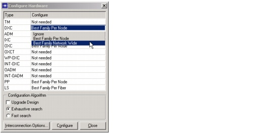

Hardware Configurator > Configuring Hardware
Configuring Hardware
You can configure SP Guru Transport Planner equipment using the Configure Hardware dialog box (Hardware > Configure Hardware). You can specify two sets of options in this dialog box:
- A configuration option for each SP Guru Transport Planner equipment type (described in Table 13-6-Configuration Options)
- Interconnection options, which specify the amount of capacity reserved for interconnecting devices (described in Table 13-7-Interconnection Options Dialog Box)
After you specify the configuration and interconnection options, click Configure. When the configuration run finishes, the Hardware Configurator Report window shows the number of valid and invalid configurations that were made for each SP Guru Transport Planner type during the run. To investigate the configuration results in more detail, use the hardware browser. This browser provides an overview of all the equipment in the network; for more information, see Hardware Browser.
The configuration algorithm optimizes and configures each equipment type separately. The only exception is for WDM line systems (LS) on fibers: in this case, the algorithm configures WDM terminal multiplexers (WDM TM), optical amplifiers (OA) and regenerators (REG) simultaneously. You can also configure OADMs, INT-OADMs, WP-OXCs, and INT-OXCs together with the LS.
Figure 13-5 Configure Hardware Dialog Box

Fast Search
- If Upgrade Design is selected, the configuration algorithm starts from the existing configuration and adds new devices and cards if required—for example, if some additional traffic has been routed. The added devices and cards are of the same product family as the current devices (of a specific SP Guru Transport Planner type in a node or on a link).
- If Upgrade Design is not selected, the algorithm discards the current configuration and creates a new configuration without considering any history.
Each design and the hardware added during the design is marked as a design run. You can run multiple design runs to upgrade and refine your hardware, and use the Hardware Browser or Show Upgrade History dialog to view the hardware added in the different design runs (as described in Hardware Browser and Viewing the Upgrade History). If you do not do an upgrade design, there is one design run only.
| Home © 1987-2007 OPNET Technologies, Inc. All Rights Reserved. This software may be covered by one or more U.S. Patents. See complete patent notice in the Legal Notices section. OPNET Support Center |